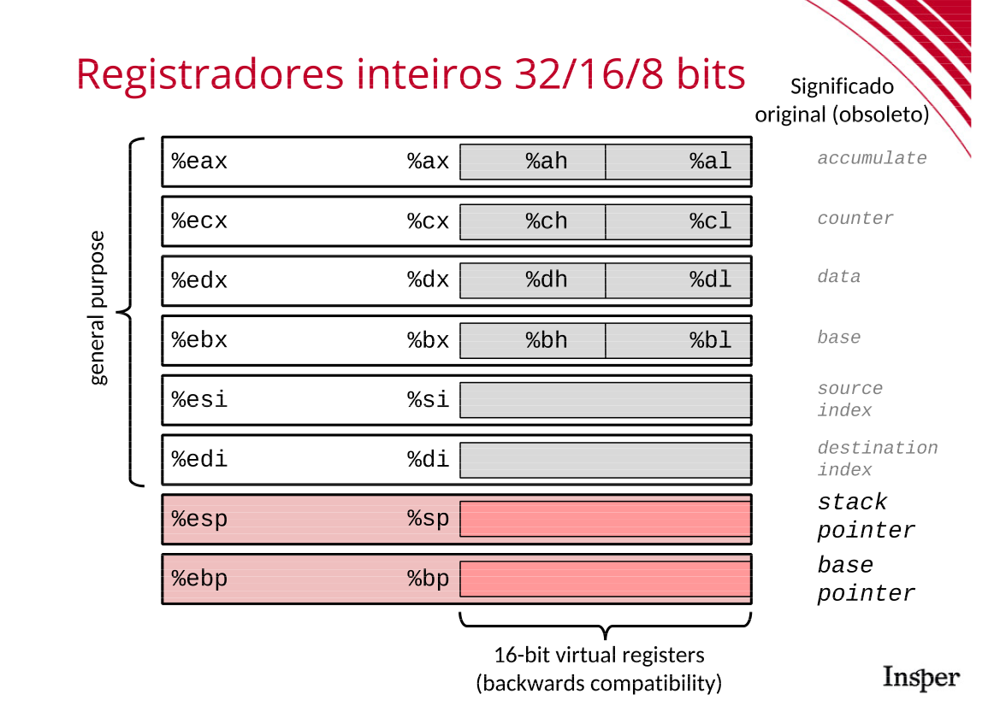

04 - Funções
Neste handout vamos trabalhar pela primeira vez na tradução reversa de programas em Assembly para C. Nas últimas aulas vimos as instruções mov e add e na aula de hoje vimos uma tabela grande com as instruções aritméticas (add, sub, mul, imul, div, etc).
Como em todas as aulas, veremos hoje um detalhe a mais sobre arquitetura x64: chamadas de funções e argumentos.
Funções e seus argumentos
Em x64 os argumentos das funções são passados nos registradores e o valor de retorno é colocado também em um registrador.
- Argumentos inteiros ou ponteiros são passados nos registradores (nesta ordem):
%rdi%rsi%rdx%rcx%r8%r9
- Argumentos ponto flutuante são passados nos registradores
%xmm0até%xmm7. - Valores de retorno inteiros ou ponteiros são colocados no registrador
%rax. - Valores de retorno ponto flutuante são colocados no registrador
%xmm0.
Para chamar funções usamos a instrução call seguido do endereço de memória da função. O gdb cria um "apelido" para estes endereços de memória usando o nome original da função no arquivo .c. Assim, estas instruções são mostradas, normalmente, como call func1, por exemplo. Note que antes de cada call devemos preencher os argumentos nos registradores corretos.
Para retornar usamos a instrução ret. Ela é equivalente ao comando return de C e devolverá o valor armazenado no %rax (ou %xmm0 para ponto flutuante).


Não se esqueça da equivalência entre o tamanhos dos registradores e os tipos inteiros em C. Um resumo gráfico pode ser visto nas figuras acima.
- 64 bits (
%rax,%rdie outros que começam comr):long,unsigned longou ponteiro; - 32 bits (
%eax,%edie outros que começa comee os que terminam emdcomor10d):intouunsigned int; - 16 bits (
%ax,%die outros com duas letras somente terminando emx):shortouunsigned short - 8 bits (
%al,%ahe outros com duas letras terminando emhoul):charouunsigned char.
Vamos agora praticar fazendo a tradução de funções que fazem aritmética simples entre inteiros (usando ou não ponteiros). O exemplo abaixo mostra todas as etapas que precisamos seguir para fazer a tradução Assembly -> C.
Exemplo guiado
Dado o código Assembly abaixo, faça sua tradução para C
0000000000000000 <misterio1>:
0: 48 01 f7 add %rsi,%rdi
3: 48 8d 04 57 lea (%rdi,%rdx,2),%rax
7: c3 retq
Assinatura da função
Vamos começar pela assinatura da função. É sempre útil identificar quais registradores são lidos antes de serem escritos. Isso nos ajuda a entender se um registrador é um argumento da função ou se ele é apenas usado como variável local. Faremos isso escrevendo todos os registradores que podem ser argumentos em ordem e vendo se são lidos ou escritos primeiro:
%rdi- lido primeiro (addfaz a operação+=)%rsi- lido primeiro (no lado esquerdo doadd)%rdx- lido primeiro (no lado esquerdo dolea)%rcx- não usado%r8- não usado%r9- não usado
Logo, os registradores %rdi, %rsi e %rdx são argumentos da função. Consultando o box de arquitetura de computadores, vemos que a função recebe três argumentos do tipo long (pois usa os registradores de 64 bits).
Note que o resultado das computações é guardado em %rax, que guarda sempre o retorno da função. Por usar a porção de 64 bits do registrador, o tipo de retorno também é long. A assinatura da função é, portanto
long misterio1(long a, long b, long c);
Tip 1
Ponteiros também usam os registradores de 64 bits. Porém, olhando rapidamente o código notamos que não há nenhum acesso a memória. Logo, se trata realmente de long.
O código
Vamos agora para o código. Nossa primeira estratégia é atribuir um nome para cada registrador. Os três registradores de argumentos já receberam os nomes a, b e c. Para deixar explícito o papel do %rax vamos nomeá-lo de retval.
A primeira instrução add %rsi, %rdi realiza a adição dos dois registradores e armazena em %rdi. Logo, sua tradução direta seria:
A instrução lea (%rdi, %rdx, 2), %rax é usada tanto para calcular endereços de memória quanto para aritmética simples. Vemos que é o segundo caso pois, no código seguinte, não acessamos a memória com o valor calculado. Logo, podemos traduzir este trecho como
Logo após temos o ret, que é traduzido como
Logo, nossa função é traduzida como
Finalmente, podemos deixar nosso código legível e escrevê-lo como
Você pode verificar o código original no arquivo exemplo1.c.
O processo acima pode ser formalizado no seguinte algoritmo:
- Identifique quantos argumentos a função recebe
- Identifique os tipos de cada argumento (pode ser necessário olhar o código assembly da função)
- Dê um nome para cada registrador. Se um mesmo registrador é usado com tamanhos diferentes (
%rdie%edisão usados no código), dê um nome diferente para cada tamanho. - Faça a tradução de cada instrução separadamente.
- Fique atento aos valores colocados em
%raxe%eaxperto do fim do código. Esses valores serão retornados pela função. - O código gerado costuma ser ilegível. Refatore-o para melhorar sua legibilidade.
Tip 2
- A instrução
leapode ser usada tanto para aritmética quanto para cálculo de endereços. Para tirar a dúvida basta olhar se as próximas instruções fazem acesso à memória com o endereço calculado ou apenas usam o valor diretamente (aritmética). - Os registradores de tamanhos menores são virtuais. Quanto escrevo em
%axestou escrevendo nos 16 bits menos significativos de%raxe de%eaxtambém. - Muitas instruções com operadores de 32bits zeram os 32bits superiores. Assim, vemos por exemplo a instrução
mov $0, %eaxsendo usada para zerar umlong. Nesses casos é necessário verificar se a função continua usando%eax(éintmesmo) ou se ela magicamente passa a usar%rax(o tipo eralong).
Prática
Vamos agora exercitar. Cada exercício faz um cálculo diferente. Se houver alguma instrução desconhecida, consulte o link https://www.felixcloutier.com/x86/ ou a referência oficial da Intel.
Warning
Usaremos o gdb para abrir os arquivos .o nesta aula. Este tipo de arquivo contém funções compiladas, mas não é um executável completo por não ter uma função main.
Arquivo ex1.o
Exercise 1
Arquivo ex2.o
Exercise 2
Exercise 3
Arquivo ex3.o
A função abaixo foi obtida de ex3.o.
0000000000000000 <ex3>:
0: 8b 06 mov (%rsi),%eax
2: 0f af c0 imul %eax,%eax
5: 89 07 mov %eax,(%rdi)
7: c3 retq
Exercise 4
Answer
Multiplica o valor em r/m (um registrador ou memória) pelo valor implícito em %ax, %eax ou %rax (dependendo do tamanho da operação).
O resultado é armazenado em par de registradores:
- 8 bits:
%al × r/m8 → %ax - 16 bits:
%ax × r/m16 → %dx:%ax - 32 bits:
%eax × r/m32 → %edx:%eax - 64 bits:
%rax × r/m64 → %rdx:%rax
A instrução imul %eax, %eax multiplica %eax por ele mesmo, ou seja, %eax = %eax * %eax.
Exercise 5
Antes de prosseguir, valide suas soluções da seção anterior com o professor.
Vamos agora trabalhar com executáveis "completos". Vamos analisar não somente o código das funções mas também sua chamada.
Arquivo ex4
Para começar!
Use o gdb para obter o conteúdo das funções main e ex4.
Dica: lembre-se do comando disas
Localize a chamada da função ex4 no main. As intruções acima do call colocam os argumentos nos lugares corretos para ex4 rodar.
Exercise 6
Exercise 7
Arquivo ex5 (desafio)
Warning
Este exercício é avançado e necessita de pesquisa para ser realizado. Faça-o somente após validar suas soluções dos anteriores com os professores.
Neste exercício vamos nos aprofundar no uso de ponteiros. Vimos no ex3.o um exemplo de função que armazenava um valor calculado em um ponteiro. Agora veremos um exemplo completo que inclui a chamada de uma função recebendo um endereço.
O trecho abaixo da função main copia os argumentos para os registradores corretos e chama a função ex5.
60b: 48 8d 4c 24 08 lea 0x8(%rsp),%rcx
610: 48 8d 54 24 0c lea 0xc(%rsp),%rdx
615: be 03 00 00 00 mov $0x3,%esi
61a: bf 0a 00 00 00 mov $0xa,%edi
61f: e8 d6 ff ff ff callq 5fa <ex5>
Exercise 8
Exercise 9
Exercise 10
Vamos agora ao código de ex5:
00000000000005fa <ex5>:
5fa: 89 f8 mov %edi,%eax
5fc: 48 89 d7 mov %rdx,%rdi
5ff: 99 cltd
600: f7 fe idiv %esi
602: 89 07 mov %eax,(%rdi)
604: 89 11 mov %edx,(%rcx)
606: c3 retq
Exercise 11
Answer
A instrução idiv faz a divisão inteira com sinal (dividendo/divisor). O dividendo deve ser um registrador de 64 bits com sinal, ou seja, dividendo é %edx:%eax e o divisor é %esi.
Depois da execução da instrução, %eax recebe o quociente e %edx recebe o resto.
Exercise 12
Answer
No exemplo acima a instruçao mov %edi,%eax copia o primeiro argumento da função para o registrador %eax (dividendo), nesse ponto temos um problema !!
%eax só tem 32 bits, e a instrução idiv precisa de um dividendo de 64 bits com sinal.
Para resolver isso o compilador usa a instrução cltd (Convert Long to Doubleword) que copia o sinal de %eax para %edx (parte alta). Agora o par %edx:%eax representa o dividendo de 64 bits, em seguida idiv %esi divide esse valor por %esi.
Exercise 13
Conferindo tudo!
Agora que terminou todos os exercícios, confira suas traduções com os gabaritos disponíveis no arquivo fontes.zip.
Atividade para entrega!
Aula com atividade para entrega. Confira seu repositório de entregas do classroom!
Atenção!
Faça git pull no seu repositório de entregas que irá aparecer uma nova pasta dentro de atv.
Como começar?
Leia o README.md disponível na pasta da atividade para descobrir como resolver e entregar.
Prazo!
Confira o prazo de entrega no menu Entregas e Prazos
Hackerlab
Nesse final de semana será liberado o enunciado do primeiro lab! Confira em Hackerlab no menu Labs!
Atenção!
Faça git pull no seu repositório de entregas que irá aparecer uma nova pasta dentro de lab.